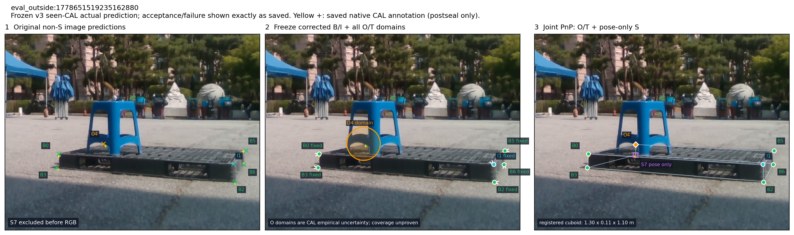
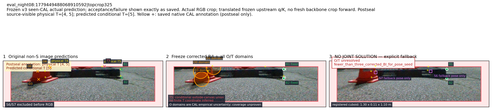

eval_outside:1778651519235162880
Frozen v3 seen-CAL actual prediction; acceptance/failure shown exactly as saved. Yellow +: saved native CAL annotation (postseal only).

Frozen v3 seen-CAL actual prediction; acceptance/failure shown exactly as saved. Yellow +: saved native CAL annotation (postseal only).

Frozen v3 seen-CAL actual prediction; acceptance/failure shown exactly as saved. Actual RGB crop; translated frozen upstream q/K, no fresh backbone crop forward. Postseal source-visible physical T=[4, 5]; predicted conditional T=[5]. Yellow +: saved native CAL annotation (postseal only).
